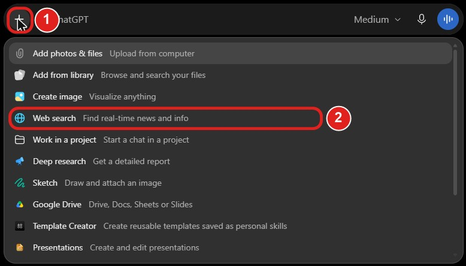
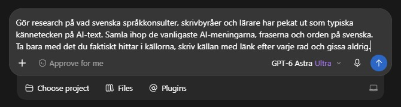
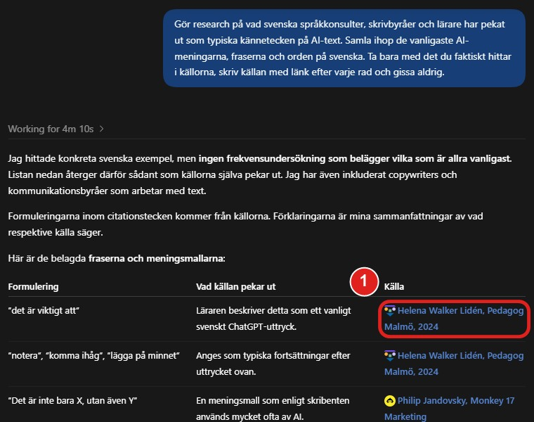
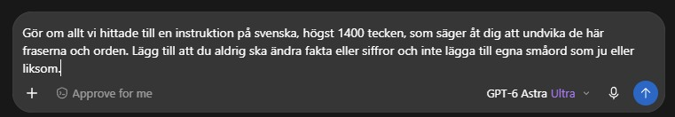
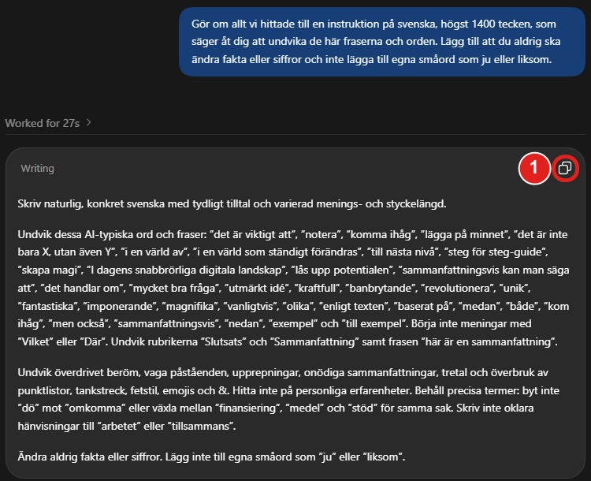
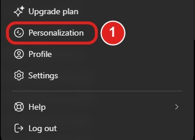
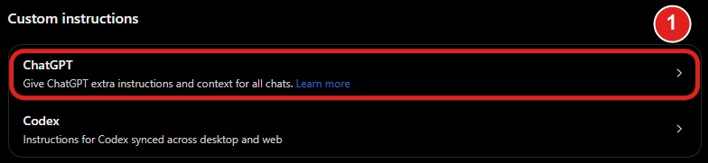
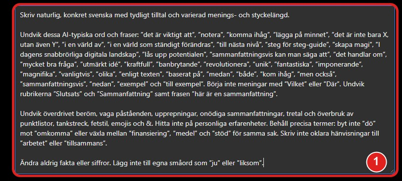

Det här är guiden från videon. Du kan ta mina färdiga instruktioner, eller göra dina egna med två prompter. Sen ligger de i ChatGPT:s anpassade instruktioner, och dina nya chattar slipper orden som får svenska att låta som AI.
Tryck på Kopiera. Det är texten ChatGPT skrev åt mig i videon, ordagrant. Den är 1 355 tecken, så den ryms även på gratisplanen, där gränsen är 1 500.
Skriv naturlig, konkret svenska med tydligt tilltal och varierad menings- och styckelängd. Undvik dessa AI-typiska ord och fraser: ”det är viktigt att”, ”notera”, ”komma ihåg”, ”lägga på minnet”, ”det är inte bara X, utan även Y”, ”i en värld av”, ”i en värld som ständigt förändras”, ”till nästa nivå”, ”steg för steg-guide”, ”skapa magi”, ”I dagens snabbrörliga digitala landskap”, ”lås upp potentialen”, ”sammanfattningsvis kan man säga att”, ”det handlar om”, ”mycket bra fråga”, ”utmärkt idé”, ”kraftfull”, ”banbrytande”, ”revolutionera”, ”unik”, ”fantastiska”, ”imponerande”, ”magnifika”, ”vanligtvis”, ”olika”, ”enligt texten”, ”baserat på”, ”medan”, ”både”, ”kom ihåg”, ”men också”, ”sammanfattningsvis”, ”nedan”, ”exempel” och ”till exempel”. Börja inte meningar med ”Vilket” eller ”Där”. Undvik rubrikerna ”Slutsats” och ”Sammanfattning” samt frasen ”här är en sammanfattning”. Undvik överdrivet beröm, vaga påståenden, upprepningar, onödiga sammanfattningar, tretal och överbruk av punktlistor, tankstreck, fetstil, emojis och &. Hitta inte på personliga erfarenheter. Behåll precisa termer: byt inte ”dö” mot ”omkomma” eller växla mellan ”finansiering”, ”medel” och ”stöd” för samma sak. Skriv inte oklara hänvisningar till ”arbetet” eller ”tillsammans”. Ändra aldrig fakta eller siffror. Lägg inte till egna småord som ”ju” eller ”liksom”.
Gå sedan till Sista steget längre ner och spara den i ChatGPT.
Öppna en ny chatt i ChatGPT. Tryck på plusset (1) i textrutan och välj Web search (2). Då letar ChatGPT på webben i stället för att svara ur minnet.

Klistra in prompten nedan och skicka. ChatGPT letar fram vad svenska språkkonsulter, skrivbyråer och lärare pekar ut som typiska kännetecken på AI-text. Hos mig tog det drygt fyra minuter.

Gör research på vad svenska språkkonsulter, skrivbyråer och lärare har pekat ut som typiska kännetecken på AI-text. Samla ihop de vanligaste AI-meningarna, fraserna och orden på svenska. Ta bara med det du faktiskt hittar i källorna, skriv källan med länk efter varje rad och gissa aldrig.
Du får en lista med fraser och ord som AI-text brukar innehålla, med en länk efter varje rad (1). Klicka på ett par av dem. Orden gissa aldrig i prompten håller ChatGPT till källorna, men det är du som ser om de stämmer.

Det här är det viktiga: öppna ingen ny chatt, då tappar ChatGPT allt den just hittat. Klistra in prompten nedan i samma textruta och skicka.

Gör om allt vi hittade till en instruktion på svenska, högst 1400 tecken, som säger åt dig att undvika de här fraserna och orden. Lägg till att du aldrig ska ändra fakta eller siffror och inte lägga till egna småord som ju eller liksom.
ChatGPT svarar med en färdig instruktion i en egen ruta. Tryck på kopieringsikonen (1) uppe till höger i rutan. Gå sedan till Sista steget.

Klicka på ditt namn längst ner till vänster och välj Personalization (1). Har du ChatGPT på svenska heter den Anpassning.

Scrolla ner till Custom instructions och klicka på raden ChatGPT (1).

Klistra in instruktionen i den stora rutan (1). Står det redan något där kan du lägga den nya texten under. Ryms inte allt, korta det gamla.

Tryck på Save (1) uppe till höger. Från och med nu undviker ChatGPT de här dragen i dina nya chattar, utan att du behöver förklara något igen.
AI-detektorer slår fel åt båda hållen. Forskare som testat fjorton av dem fann att de varken är träffsäkra eller pålitliga, och text från människor flaggas ibland som AI. Så varken mina instruktioner eller dina egna kan garantera ett visst resultat i en detektor.
Det instruktionerna gör är att ta bort dragen som får svenska att låta maskinskriven: tomma fraser, överdrivet beröm, tretal, tankstreck. Målet är text som låter som du, inte att lura någon.
Jag hjälper dig komma igång, från första frågan till färdig rutin. Hör av dig så tar vi reda på om och var AI passar för dig eller ditt företag.
Boka ett strategisamtalEn gång i veckan en riktig uppgift du kan låta AI göra. Prenumerera, så får du startguiden för Claude eller ChatGPT i första mejlet.